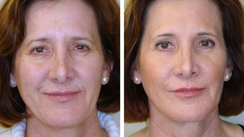

Jak vypadat na 30 v 50?
 Vytvořila Iveta Nejedla
Vytvořila Iveta Nejedla

Hladká a hedvábná pokožka na obličeji. Zdravá kůže, lehce zarudlá. Žádné váčky pod očima, vrásčitý obličej a vrásčitá kontura. To vše ve věku, kdy přirozená krása dává vzniknout přirozeným změnám – po 50 letech. Realita nebo fikce? Odpovědně prohlašujeme realitu a bez použití plastické chirurgie
Na fóru jsme pro vás dali dohromady tři neuvěřitelné příběhy o kráse dospělých žen, které nám závidí hollywoodské hvězdy. Aby si zachovali mládí, všichni používali krém - ne nejoblíbenější, ale efektivní, cenově dostupné a vhodné pro domácí správu.
Andrea, Praha, 53 let, žena v domácnosti, matka dvojčat
Zde je moje foto. Jsem ve společnosti svých dospělých dcer.

Když se mě někdo zeptá na mou největší hrdost, spěchám vám říct o dětech ao tom, jak jsme si podobní. Anna a Lucie jsou dvojčata. Co se týče našich tradic, porodili jsme je dost pozdě - až ve 28 letech. Musím říct, že teď vypadám ještě lépe než v těch letech. Ale uplynulo čtvrt století!
Miluji své dívky. Naše vztahy jsou přátelské, jsme stále spolu a vtipnější je, že se často pleteme s trojčaty))) Holky mi geneticky připomínají. Ale ve věku 50 let moje kůže zjevně ztmavla, ale chtěla jsem vypadat mladě. Abych i nadále dostával komplimenty ve společnosti svých dcer, začal jsem vymýšlet drastická opatření – stejná plastická operace.
Ale Anna je dermatolog a sleduje všechny výzkumy, inovace a úspěchy ve svém oboru.zázračný krém uvnitř. Moje dcera trvala na tom, abych kurz dokončil - 32 dní. Postupně jsem začal vidět obnovu minulého mládí - vrásky na čele zmizely za pár týdnů, další týden byl potřeba k obnovení tónu a sametové pleti. Chtěl jsem se tam zastavit, ale moje dcera řekla, abych dokončil kurz. Takže se na šest měsíců ve společnosti mých dcer opravdu těšíme!
Renata, Brno, 54 let, manažerka v investiční společnosti
My jednoduché tempo života! Ročně mám až 40 letů včetně mezikontinentálních letů. Neustálý
nedostatek spánku, vzácné návštěvy kosmetičky, věčný stres. To vše mi samozřejmě na mladistvém
vzhledu nepřidá, ale přesto mrkněte na fotku.

mám vždy v kosmetické taštičce. Jedná se o pohodlnou kompaktní tuba s kremem. Jsem velmi pedantský, disciplinovaný člověk. Proto nezapomeňte provádět procedury proti stárnutí s tímto lékem 3-4krát ročně. Ať jsem byla kdekoli, kam bych druhý den ráno nespěchala, ale večer jsem nanesla čistou pleť obličeje. Konzistence, pravidelnost, konzistence - zdá se, že na 55 koukám maximálně na 35. Krém vyživuje pleť kyselinou hyaluronovou a přírodními výtažky, hořčíkem a přírodním kolagenem obnovují vodní rovnováhu. Jsem si jist, že tento speciální krém je vhodnou volbou pro ženy, které v tomto životě uspějí ve všem!
Irena, Polna, 52 let, návrhářka-stylistka
Mezi přáteli a kolegy ve stejném věku jako já se polovina otužovala, polovina vypadala dobře,
ale stále 50+. Byl jsem poslední tři roky jako boj s větrnými mlýny. Opravdu chci být pár hodný
svého 33letého manžela a ve skutečnosti se na tom léta podepsala. Kyselé peelingy, botox,
hyaluronové masky a domácí ovoce a mléčné výrobky. Osobně jsem testoval tisic mléka a gelů proti
stárnutí Zastavila jsem se na krému .
Zde je krátká prezentace tohoto produktu:
- ● textura je jemná, homogenní, s mírnou nedráždivou vůní,
- ● snadná aplikace - tenká rovnoměrná vrstva, dokonale se rozloží a vstřebá, zároveň intenzivní a jemný účinek,
- ● nestahuje pokožku, na obličeji není žádný pocit fleku, se vstřebává kůžíokamžitě,takže -okamžitě hebké a hydratované,
- ● aplikovala krém dvakrát denně po dobu tří týdnů, použil jsem dvě tuby - jako bych utekl 15 let; Kurz zopakuji po šesti měsících.
Dívky v práci nevěří, že takového výsledku lze dosáhnout bez chirurgického liftingu, takže na všech svých sociálních sítích, na fórech, kdekoli je to možné, uvádím odkaz na oficiální stránky výrobce krému. Na internetu je běžný názor, že existují padělky, naštěstí jsem na ně nenarazil, protože objednávám pouze zde.
Pod dojmem takových recenzí jsme se s výrobcem dohodli na slevě pro naše čtenáře. Nyní můžete získat mladistvost a svěžest tváře - doma a bez ovlivnění vašeho rozpočtu.


Klara
Posted 6 days ago
O tomto krému, pokud na internetu nejsou žádné recenze! Říká se, že jde o skutečnou revoluci v kosmetologii. Zdá se mi, že nebudou příliš populární, protože to je důstojná konkurence nejen pro krémy Loreal nebo Vichy, ale také pro fotky s botoxem a všemožné protahování. A toto je celé obchodní odvětví, takže je v našem nejlepším zájmu hledat o něm informace a využívat takové jedinečné nabídky, jako je tato. Díky autorům!
Tereza
Posted 5 days ago
Objednal jsem krém, včera jsem si vzal balíček. Byl mi předepsán kurz 21. na základě stavu pleti, který jsem popisoval. Do tohoto nástroje vkládám velké naděje, pokud bude oprávněná, určitě se pochlubím!
Petra
Posted 6 hours ago
Určitě zveřejněte fotky. Například tady jsou moje! Dokážete si to představit? A to až po měsíci používání. Ale nezůstanu u toho, čeho jsem dosáhla, myslím, že ještě pár týdnů a budu jako holka!
Petr
Posted 4 days ago
Nemyslel bych si, že to bude užitečné, ale díky vaší publikaci jsem koupil úžasný dárek pro svou ženu a ona mi teď vždy děkuje! Tak to bylo krásné, s tímto krémem to opravdu rozkvetlo. Dík.
Milan
Posted 3 days ago
Pro mě je to úplná blbost. Někde jsem četl, že odstranění vrásek je téměř nemožné, je třeba zabránit jejich vzniku. Nechápu, jak speciálním způsobem funguje tento produkt, který odstraňuje hluboké rýhy za pár týdnů. Pokud je kůže uvolněná, je to navždy.
Jana
Posted 2 days ago
Dobře, i když jste skeptičtí, toto je moje objednávka dvě trubky najednou. Je mi jedno, jak to tam funguje, ale že to funguje. Ještě bych zpochybnil recenze od lidí zvenčí, ale můj soused toho využil a doporučil před dávnými časy. Vždy to nechám na později, ale pokud už jsem dosáhla na tento článek a takovou nádhernou slevu, tak ji využiji.
Eva
Posted 9 hours ago
Ano, podívej se, jak vypadá moje máma poté, co si vzala . Začínám uvažovat o tom, že bych si takový kurz pro sebe udělal. Vrásky jako takové však nemám, ale právě tady někde zazněl názor - je lepší nepovolit, než je později napravit. 
Barbora
Posted 14 hours ago
Můj kosmetolog změnil obličej, když jsem se ho zeptal na . Z toho jsem došel k závěru, že se bojí, že mě jako klienta ztratí. Samozřejmě, že každý měsíc je pro ně výhodnější vzít nás stovky, a ne jen jednou poradit skutečně účinný lék. Jak můžeš být hloupý, jsem unavený! Takže velím a nechávám je, tyhle mega drahé salony.